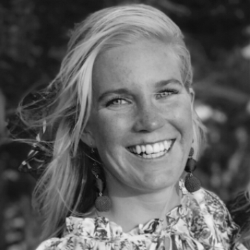

Business Trainee, H&M
Civilekonom
Lunds universitet
Bor i: Amsterdam/Stockholm
Kommer från: Stockholm
Jag jobbar som trainee på H&M vilket innebär att jag under 18 månader jobbar i tre olika delar av organisationen. Just nu slutför jag min placering i vår säljorganisation som Area Controller i Amsterdam. Detta är min andra placering för traineeprogrammet och tidigare har jag hunnit göra sex månader på vårt inköpskontor i Stockholm, där jag jobbade som business controller. I höst flyttar jag sedan till Hong Kong för att jobba i produktionsorganisationen.
Mina arbetsuppgifter varierar givetvis beroende på vilken del av vår organisation jag är i för närvarande. Gemensamt för alla mina roller är att de fokuserar på analys av vår försäljning; detta kan antingen, såsom på min nuvarande placering, fokusera på försäljningen i butikerna i ett geografiskt område, eller som när jag arbetade på inköpskontoret, syfta på ett visst koncept.
En typisk arbetsdag är faktiskt svår att beskriva eftersom mitt arbete varierar väldigt mycket. Men den innehåller alltid att jag analyserar siffror av något slag för att kunna dra slutsatser om vilka åtgärder vi bör vidta. Den innehåller också alltid att samarbeta med kollegor från en helt annan bakgrund än jag själv har, såsom inköpare, designers, butikschefer eller HR, och just den biten är för mig en av de roligaste delarna med jobbet. Jag kan ibland inse att vi har så otroligt olika perspektiv på ett gemensamt ämne, att det alltid finns en utmaning i att hitta den bästa vägen framåt. Det är enormt givande att hamna i en diskussion med någon med ett helt annat synsätt, och jag utmanas varje dag till att hela tiden tänka bredare.
En typisk arbetsdag för mig börjar alltid med mycket kaffe och vad den fortsätter med beror på veckodag. Måndagar är alltid fokuserat på försäljningsanalys, andra dagar kan innehålla möten, olika typer av analyser, forecasting eller helt andra saker. Här i säljorganisationen innehåller också mina dagar butiksbesök vilket verkligen är kul, där finns möjlighet att jobba väldigt hands-on och med fokus på möjliga åtgärder direkt i butiken. Dessutom betyder det att jag får se väldigt många olika delar av Nederländerna, eftersom butikerna ligger spridda över hela landet. Självklart ser jag till att försöka lära mig några holländska ord varje dag, något som definitivt kan resultera i både skratt och svordomar.
Det jag tycker mest om med mitt jobb är att det alltid går i ett högt tempo, varje dag är fylld av väldigt många olika delar så jag lämnar alltid jobbet med känslan av att jag åstadkommit mycket. En annan sak som jag verkligen gillar är mina kollegor, trots att jag flyttar runt i olika länder finns det en sak gemensamt med mitt jobb och det är stämningen med mina kollegor. Varje dag tillför mina kollegor skratt till min jobbdag och det är så tydligt att kollegor oavsett land lever efter samma företagskultur. För min personliga del är just den här biten viktig, då jag älskar att varva jobb med personliga samtal och mycket skratt. För mig är målet alltid att kunna se fram emot den stundande dagen, och att få ha grymma kollegor gör verkligen det lättare.
Jag hoppas definitivt att jag fortsätter på den bana jag nu slagit mig in på, men också att jag har mer tid till att bidra utanför mitt arbete. När jag återvänder till Sverige hoppas jag kunna engagera mig i mentorskap, allra mest brinner jag för att kunna göra något ihop med ungdomar. Jag är övertygad om att man som ung behöver en bro mellan föräldrar och andra tonåringar, och att man som vuxen behöver lite ungdomliga, orädda tankeställare ibland. Jag tror helt enkelt väldigt starkt på att mentorskap kan bidra på ett fantastiskt sätt i flera avseenden.
För mig var det en fullkomlig självklarhet att studera vidare på universitetet. På min studentdag sa min pappa till mig ”Äntligen Andrea, nu kan du börja plugga i Lund, det har du ju tjatat om sedan du var 12 år”. Och så var det verkligen, jag har alltid haft tydliga drömmar och under hela mina tonår var studentlivet min stora dröm; jag hade föräldrar som båda pluggat på universitetet, en till jurist och en till lärare, och de hade målat upp en så idealisk bild av studentlivet att jag inte kunde släppa den. Väl i Lund visade det sig att jag inte behövde ge upp den drömmen. Jag älskade att plugga! Det var det absolut roligaste i mitt liv hittills, och jag älskade också hur utvecklande de åren var.
När jag började på gymnasiet hade jag ju redan vetat i flera år att jag ville läsa på universitetet, och just eftersom att studentlivet var något jag längtade till så tyckte jag det var jättekul att läsa på om olika utbildningar; att grotta ner mig i information om utbildningar fick mig att känna mig närmare den dagen det var dags. Jag läste därför vartenda ord som fanns att läsa om varenda utbildning på Lunds universitet (Lund hade jag nämligen redan bestämt mig för) och förde noggranna dokument över ”ja”-, ”nej”- och ”kanske”-alternativen.
Till slut återstod Civilekonomprogrammet och några andra program, men min magkänsla sa till mig att civilekonomprogrammet skulle bli rätt. Och jag är glad att jag lyssnade på den magkänslan! Det hade jag inte gjort när jag valde gymnasium och det var alltid så tydligt för mig att min magkänsla hade haft helt rätt i det valet. Så efter att ha gått tre år och ångrat att jag inte lyssnat på magkänslan bättre, så kände jag att det var dags att visa för mig själv att jag lärt mig just det.
För min del så tog jag två år till att jobba och resa innan jag började studera på universitetet, detta trots att jag hade längtat till att få flytta till Lund i så många år. Det beslutet är nog ett av mina bästa. Jag var nämligen väldigt trött på allt vad skola hette när jag slutade gymnasiet, och det kan jag tänka mig att många är. Är man det behöver man inte ha så bråttom, ta din tid och gör något annat först.
För min del gjorde de där två åren att jag fick tillbaka en lust till att plugga, så när jag väl började i Lund tyckte jag både att det var kul med allt studentliv men också med det faktiska plugget. Jag tror också att det faktum att jag hade hunnit jobba heltid på ett kontorsjobb var en stor fördel, det gjorde nämligen att jag kom till Lund med inställningen att en vanlig dag pågar 8-17 måndag till fredag, en inställning jag absolut inte hade efter gymnasiet. Mitt tips till alla som vill börja plugga är därför helt enkelt att inte ha så bråttom, bestäm dig för vad du vill men börja först när du är redo.
Lund är en fantastisk stad, det går knappt att beskriva allt som är bra med Lund. Det absolut roligaste var att möjligheterna för vad man kunde göra var i princip oändliga. Det finns så otroligt många olika saker man kan engagera sig i, eller delta i, att det nästan är omöjligt att välja vad av allt kul man ska lägga tid på. För min del kastade jag mig direkt in i massa olika ideella engagemang på både kår, nation och andra delar. Och oj vad kul jag hade.
För den som funderar på att börja plugga och undrar hur roligt det är kan jag bara säga att det är inget att ens fundera över. Det bästa är nästan att genom att engagera sig i olika föreningar eller evenemang så träffar man otroligt många olika typer av människor. Jag är övertygad om att ifall det inte hade funnits ett så stort studentliv i Lund hade jag aldrig träffat så många olika typer av människor som jag gjorde. Jag gillade verkligen att jag hela tiden träffade folk som pluggade helt andra saker än vad jag pluggade, som kom från helt andra ställen än vad jag gör och som såg på saker på helt andra sätt än vad jag gjorde. Det var både väldigt kul men också väldigt utvecklande.
Dessutom lever man ett liv i Lund som är så lättillgängligt; allt var på gångavstånd, mina vänner blev min familj och jag utvecklades till en person jag aldrig hade blivit utan Lund. Jag låter kanske överentusiastisk men jag kan inte vara annat. Allt ideellt man kan engagera sig i är också den bästa skolan i praktisk erfarenhet man kan få. Hade jag läst på universitetet i en stad utan studentliv är jag väldigt säker på att jag inte hade fått möjlighet att göra så stora och lärorika projekt som jag gjorde under min studietid!
Helt ärligt hade jag inte gjort mycket annorlunda. Jag är som sagt nöjd med att jag engagerade mig i studentlivet direkt, för det jag lärde mig från ideella engagemang är det som gjort att jag kunnat få så många roliga jobb som jag fått. Erfarenheten från studentorganisationerna innebar möjligheten att ta ett mycket större ansvar för olika projekt, något som jag annars hade fått möjlighet till först efter flera år av arbete. Dessutom lärde jag mig väldigt mycket om motivation och mina egna gränser eftersom mycket arbete jag gjorde var ideellt. Utöver skolan och ideella engagemang jobbade jag också extra mycket, vilket både gav mig erfarenheter inom konsultarbete och rekrytering. Det har varit enormt lärorikt och något jag definitivt använt mig av efteråt. Jag är ganska säker på att om jag inte varit ideellt engagerad hade jag inte heller fått möjligheten att ha så utmanade och inspirerande extrajobb.
Mitt första jobb efter examen är mitt nuvarande jobb som business trainee på H&M (du kan läsa mer om traineeprogrammet här), vilket såklart var ett drömjobb! För min del så var processen att söka jobb efter examen väldigt rolig, men också något som tog mycket energi och tid. Jag är dock övertygad om att man även här bör vänta på att magkänslan ska vara rätt. Många som tar examen vill bara ha ett jobb, och funderar kanske inte på att det inte bara är arbetsgivaren som ska ställa höga krav på den de anställer, utan också att den sökande bör ställa höga krav på arbetsgivaren.
Som nyexaminerad student, och framförallt som student med olika typer av erfarenheter utanför studierna, är man en jättetillgång för företaget om man hamnar rätt. Och huruvida det verkligen är rätt är det bara du själv som kan avgöra. Så våga utmana företagen som du söker till! För min del tackade jag nej när jag inte kände att vi stämde överens, och det visade sig också att det fanns en match där allt kändes rätt; hade jag inte väntat till dess hade jag kanske inte heller träffat just H&M. Och även om jag älskade att plugga så älskar jag också att äntligen vara ute i ”det riktig arbetslivet”. Precis som jag drömde om studentlivet har jag drömt om arbetslivet, och efter att ha pluggat i 5 år med obegränsat med tid till att fundera på om man pluggat tillräckligt och där allt bara hängde på mig, var det väldigt skönt att komma ut i ett arbetsliv med rutiner och kollegor!
Jag har alltid haft väldigt tydliga drömmar, kanske till och med för tydliga. När jag var yngre kunde jag längta efter framtiden så mycket att jag glömde bort nuet. Men att ha tydliga drömmar har också gjort mig väldigt målmedveten. Att se målet framför mig har fått mig att alltid kunna lägga i en växel till och en växel till. Men jag har också sagt många gånger att min största tillgång och mitt största hinder är en och samma egenskap, nämligen att jag är väldigt disciplinerad när jag väl vet vilket mål jag siktar mot.
Jag har min disciplin att tacka för att jag nått många av mina drömmar, men det har också inneburit en väldig massa hårt jobb. Helt ärligt gjorde jag så många olika saker samtidigt i studentlivet att jag till slut var tvungen att lära mig sätta gränser. Jag ska inte räkna upp hur många olika saker jag tog på mig utanför mina heltidsstudier, men det var så pass mycket att jag insåg att om jag ska vara så disciplinerad som det faller sig naturligt för mig, kommer jag inte orka jobba så länge som jag vill. Och för mig är många typer av jobb det jag brinner för allra mest, så att jag lärt mig gränssättning lite bättre är något jag tror att jag i framtiden kommer säga har varit en framgångsfaktor för mig.
För att sammanfatta mitt svar skulle jag säga att jag tror att den viktigaste framgångsfaktorn uppstår när man vill något tillräckligt mycket för att jobba hårt för det, så det gäller att hitta sin egen drivkraft och sedan balansera viljan för att kunna jobba långsiktigt.
Jag skulle säga "kör på!". Hur klyschigt det än låter måste man våga för att vinna, och så länge man förstår att plugga på universitetet inte enbart handlar om betyg tycker jag inte heller att man behöver oroa sig för att inte klara av allt med bravur. För min del har jag aldrig fokuserat på att få högst betyg utan att faktiskt lära mig det som jag trott att jag ska ha störst nytta av. I motsats till vad många tror är inte höga betyg allt. För min del var all möjlighet till praktisk erfarenhet inom projektledning och att omsätta mina kunskaper i ekonomi och ledarskap till praktiken, det som gjorde att jag kände att jag hade något unikt att komma med när jag klev ut i arbetslivet.
Jag är också övertygad om att en enormt stor fördel man får med sig från universitetslivet är det nätverk man bygger upp. Det handlar inte om ett nätverk i form av bra jobbkontakter när man fortfarande pluggar, utan bara om vilka man har kul med och samarbetar bra med. När man sedan tar steget från universitetslivet har man lärt kanna en massa olika människor som också är väldigt duktiga och driftiga, och där det dessutom finns en ömsesidig tillit. Det är något jag är säker på att jag kommer ha enorm nytta av i framtiden.
Slutligen, tänk på att du kan också testa på att plugga på universitetet bara för att ha kul och lära känna underbara människor, jag är säker på att du kommer lära dig en hel massa av bara farten då.
Skapad 2018-08-31.